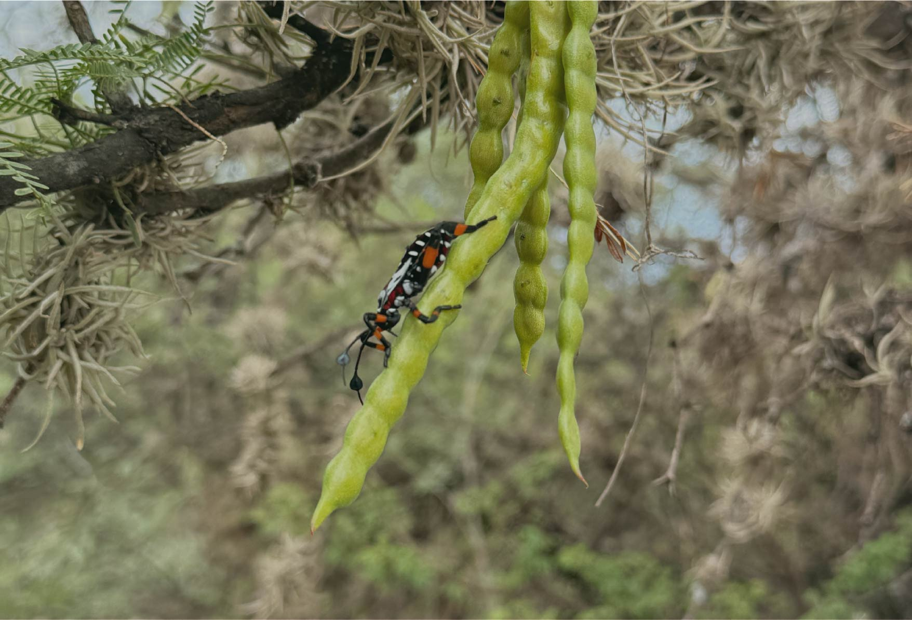
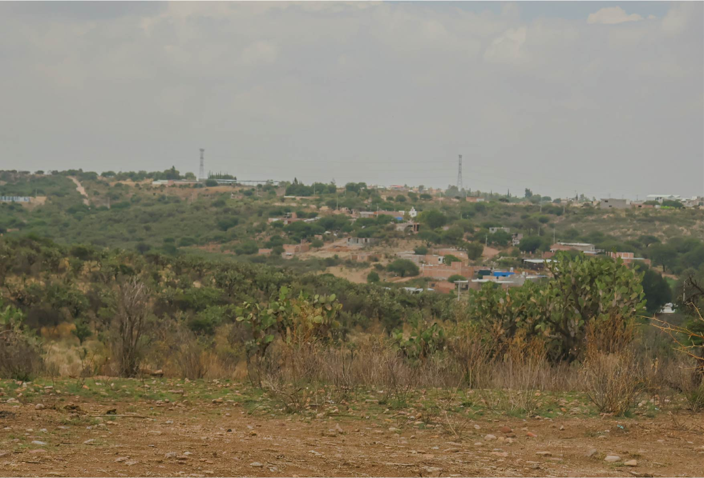
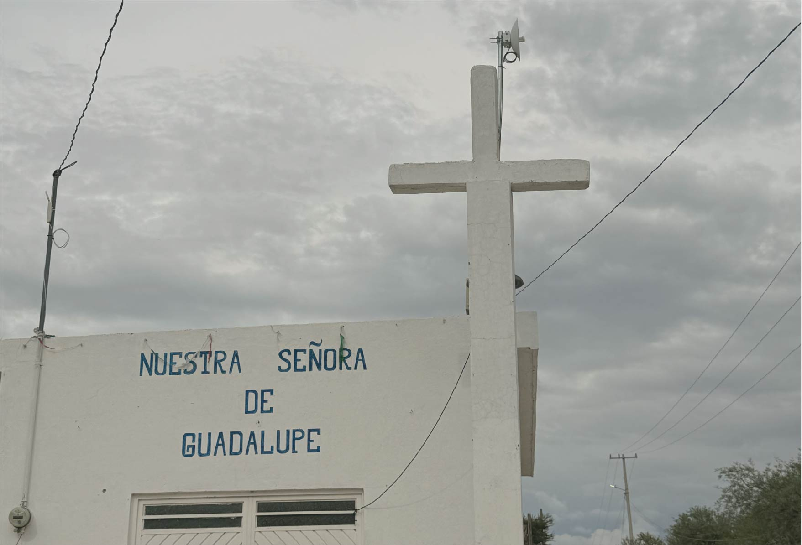
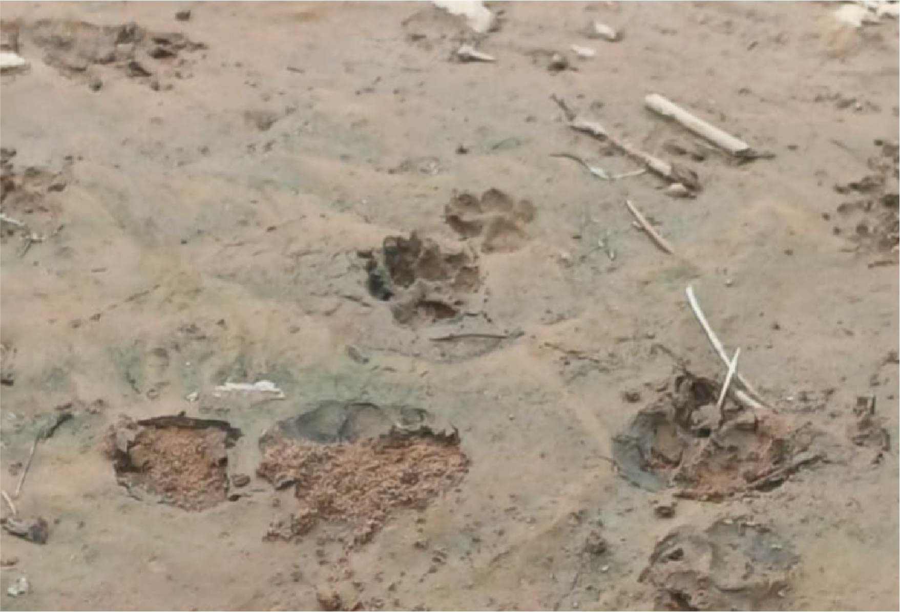
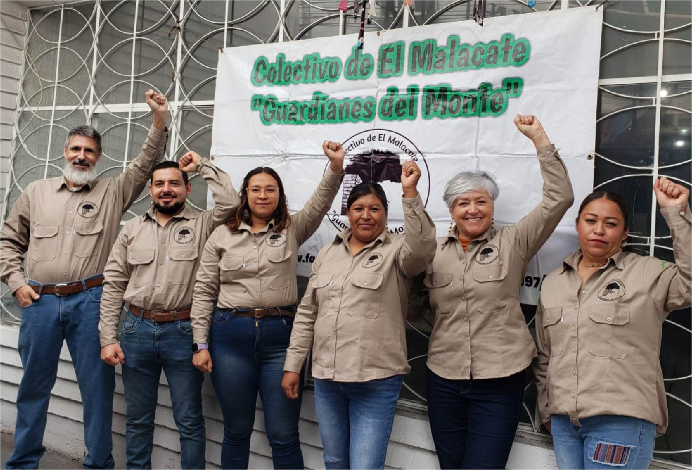
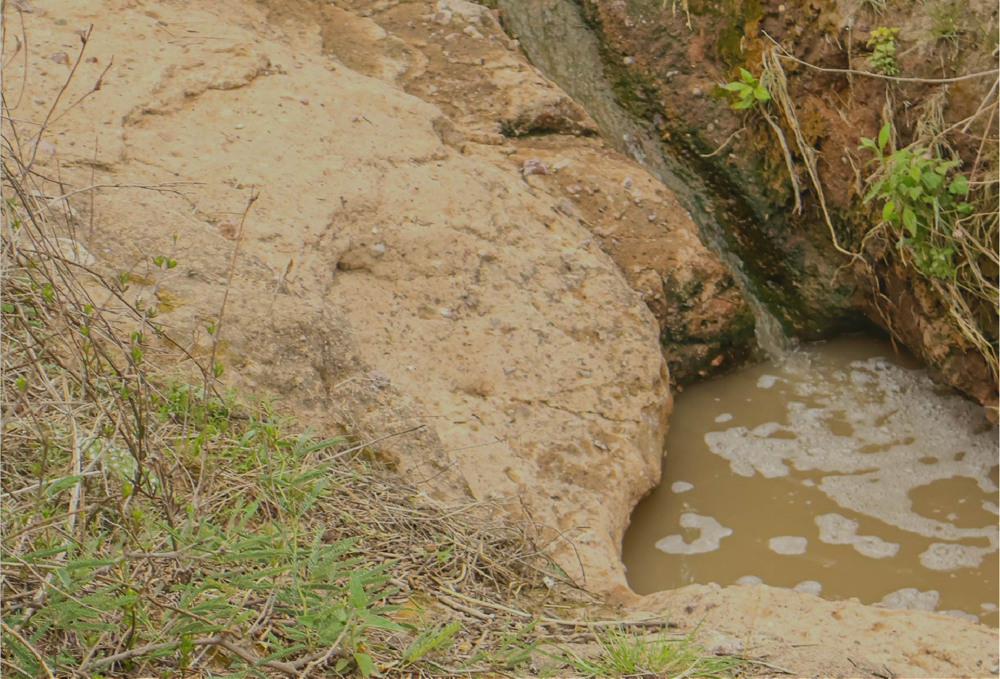
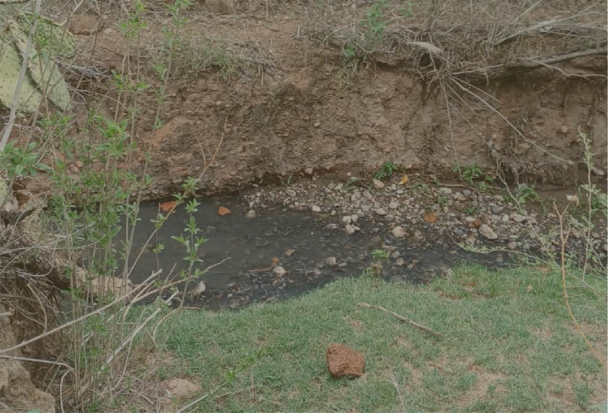
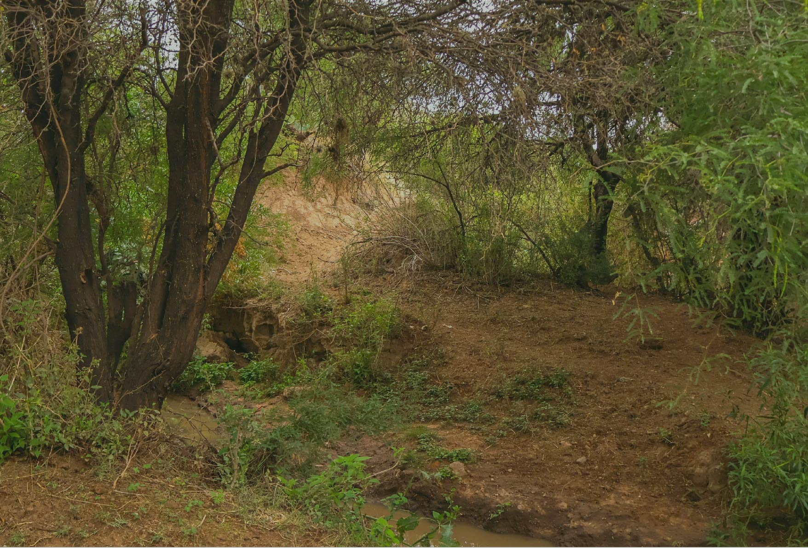
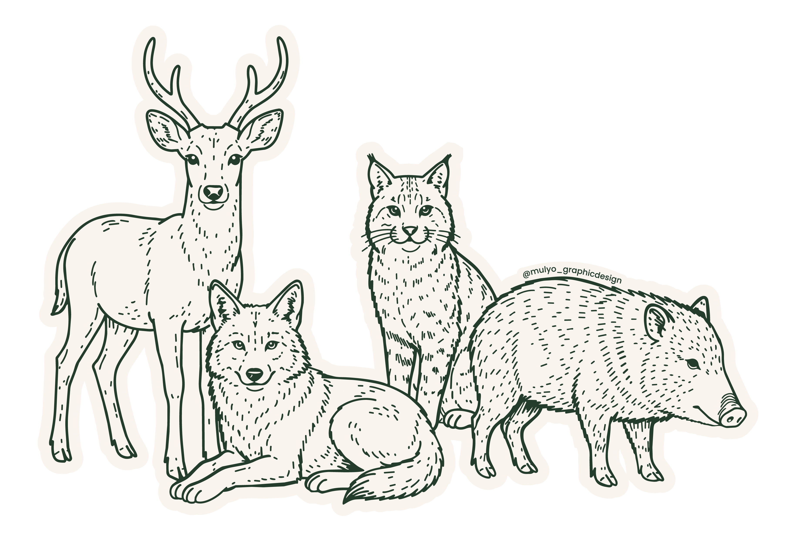

El Malacate es una comunidad rural ubicada al suroriente de la ciudad de Aguascalientes. Más que un espacio natural, representa un lugar con un valioso legado histórico, cultural, social y ambiental que ha formado parte de la identidad del estado durante generaciones.
Su territorio alberga una gran diversidad biológica y brinda importantes servicios ambientales, además de resguardar acontecimientos históricos y tradiciones que continúan dando vida a la comunidad. Conocer El Malacate es comprender la importancia de conservar un patrimonio que pertenece a todos.

El Malacate surgió gracias a la herencia, compra y donación de distintos predios, dando origen al poblamiento de la comunidad. A lo largo de su historia ha desarrollado una identidad propia, marcada por la organización comunitaria, sus tradiciones y un fuerte sentido de pertenencia. Actualmente, sus habitantes trabajan por rescatar y preservar su memoria histórica.

El nombre de El Malacate proviene de su antigua noria, infraestructura alrededor de la cual se fundó la comunidad y se desarrolló gran parte de su vida social. Otro espacio emblemático es la capilla, considerada el centro espiritual y religioso de la comunidad, donde se fortalecen los lazos entre sus habitantes.

El territorio de El Malacate conserva un importante legado paleontológico con hallazgos de megafauna perteneciente a la Era del Hielo. Estos descubrimientos convierten a la zona en un sitio de gran relevancia para comprender la historia natural de la región.
Guardianes del Monte nació como una iniciativa de vecinos y vecinas preocupados por la contaminación y el deterioro ambiental que enfrentaba El Malacate. Desde entonces, el colectivo trabaja en la preservación del medio ambiente, la investigación y el rescate de la historia, cultura y tradiciones de la comunidad.
Sus acciones incluyen educación ambiental, jornadas de limpieza, manejo del fuego forestal, rescate de la herbolaria y la tradición oral, talleres, investigación, gestión con organizaciones y trabajo comunitario. Gracias a este esfuerzo se ha logrado reducir problemáticas como la tala de mezquites, la cacería, el depósito de basura y escombro, además de fortalecer la conciencia ambiental y el valor del patrimonio local.

El Malacate forma parte de una microcuenca hidrográfica que desempeña un papel fundamental para el equilibrio ambiental de la zona. Su territorio está conformado por un bosque de matorrales espinosos, un arroyo de gran importancia biológica y social, y un ojo de agua que da testimonio de la dinámica hídrica que caracteriza este paisaje. Conecta con el Bosque de los Cobos y hace un corredor biológico muy importante.

El Malacate contribuye a la captación e infiltración de agua hacia el subsuelo, favoreciendo el funcionamiento del sistema hídrico de la región.

Considerado uno de los principales símbolos naturales de la comunidad, el arroyo forma parte de la historia y del equilibrio ecológico del territorio.

Su bosque de mezquites, nopales, huizaches y plantas medicinales representa un patrimonio natural cuya conservación beneficia tanto a la comunidad como a la ciudad de Aguascalientes.
El Malacate resguarda una importante riqueza biológica. Entre su vegetación destacan especies nativas como mezquites, huizaches, nopales, garruños, palo azul y engordacabra, plantas que contribuyen a la captación de agua, la conservación del suelo y el equilibrio del ecosistema.
Su fauna incluye venados, coyotes, gato montés, zorra gris, mapaches, conejos y tlacuaches, además de reptiles, anfibios, más de 60 especies de aves e innumerables insectos y artrópodos que convierten a este territorio en un refugio para la biodiversidad.

El depósito de basura y escombros afecta la calidad del agua, del suelo y del aire, además de favorecer la aparición de plagas que representan un riesgo para la salud.
Ante la actual crisis hídrica, la comunidad considera necesario replantear el modelo de crecimiento urbano para proteger los recursos hídricos que aún conserva El Malacate.
Los incendios forestales provocan la pérdida de áreas de gran importancia biológica y generan afectaciones en la salud de quienes habitan cerca de la zona.
El crecimiento urbano ha incrementado la presión sobre el territorio mediante la explotación de recursos naturales, la generación de residuos y diversos impactos ambientales y sociales.
La falta de protección y atención al territorio ha permitido el deterioro de espacios naturales e históricos que forman parte del patrimonio de El Malacate.